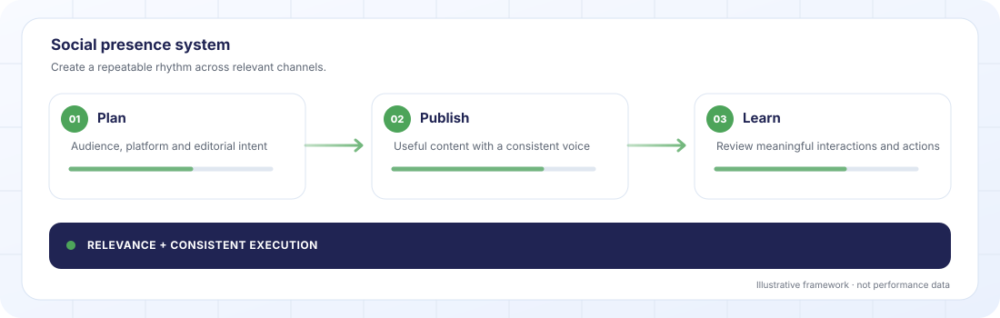

Looking for a specialist social media agency?
Not posts. A reputation that compounds. OrcaPulse runs Instagram, TikTok, LinkedIn, Snapchat and YouTube as one brand across every platform and every market.

Illustrative workflow, not client performance data.
What we do, in one paragraph.
We handle positioning, content calendar, daily production, community management, influencer partnerships and reporting. Senior creators doing the work not interns on Canva.
The funnel, in plain words.
TOFU, MOFU, BOFU not jargon. Just where in the journey a buyer is, and what Social Presence does at each stage.
Where this gets executed.
Not every channel for every client. We pick based on your market, buyer and goal.
The real reasons businesses contact us about Social Presence.
If more than two of these feel familiar, it's probably time to talk.
- You post every week but your audience isn't growing.
- Your DMs go unanswered or get answered with templates.
- Each platform looks like a different brand.
- You've hired three social agencies and had three different voices.
- Content takes forever to approve because there's no system.
- Your competitors are winning in short-form video and you don't know where to start.
Honest about fit.
Not everyone should buy this. Here's who it works for and when we'd tell you to spend the money differently.
Right fit when
- You have a point of view, not just products.
- You can be visible founder, team, product in context.
- You can commit to a weekly content cadence.
- You accept that social is brand, not just performance.
- You trust us to make editorial calls.
Wrong fit when
- You expect to go viral in month one.
- You want to approve every post 48 hours in advance.
- You have no visual assets and no appetite for shooting any.
- Your product can't be shown or talked about publicly.
- You want 1 million followers in 90 days.
How we measure and scale.
The metrics we track, and what we do once we have a winner.
- Reach by platform.
- Engagement rate (not just follower count).
- DMs received and converted.
- Content → website → conversion attribution.
- Share of voice vs named competitors.
- 01Double down on content formats that outperform.
- 02Expand into new platforms when the audience justifies it.
- 03Build creator partnership programs not one-off deals.
- 04Launch content series that run for 6+ months.
How we actually run this.
The first 30 days.
Three things happen when we start: we identify the tests, gather the data, and set expectations against a realistic timeline.
- Content pillars which 3–5 topics own the brand.
- Platform-specific creative not reformatted from a single asset.
- Posting cadence the frequency that actually works for your audience.
- Short-form video Reels vs TikToks vs Shorts, which drives most reach.
- Community management tone formal, casual, playful.
- Access to your social accounts (admin level).
- Any brand guidelines, tone-of-voice docs or style guide.
- A list of competitors you want benchmarked.
- Products, services and offers you want highlighted.
- Access to the founder/team for behind-the-scenes content.
The common mistakes.
The patterns we see repeated across underperforming programs. Fix any of these and performance usually moves immediately.
Posting the same creative on every platform.
Reels aren't LinkedIn posts aren't TikToks. Platform-native content wins.
Letting the brand voice drift.
Three different writers = three different brands. Needs one editor.
Chasing virality instead of consistency.
One viral post gets you an audience that leaves. Consistency builds one that stays.
Ignoring DMs.
Social is a sales channel. DMs that go cold cost deals.
How pricing works.
One flat fee per quarter, agreed before we start. We do not take a percentage of your ad spend.
One flat quarterly fee
You get one price for the quarter. No hourly billing and no surprise invoices.
Priced by scope
The fee depends on what is in scope for Social Presence: the work to be done, the markets covered and how much has to be built from scratch.
A quote after one call
We scope it together on a 30-minute call, then send a fixed price. If we are not the right fit, we tell you.
Ad spend and other third-party costs are separate and agreed with you in advance.
Common questions.
The real questions prospects ask us before signing an engagement.
How many posts a week should we expect?+
Depends on platform and audience. Typically 3–5 posts per week on Instagram, 3+ on TikTok, 2–3 on LinkedIn. A cadence that fits the brand not a padded calendar.
Do you handle community management?+
Yes. Comments and DMs during business hours, with escalation protocols for anything that needs the client. We can scale to 24/7 when volume justifies it.
Do you work with influencers?+
Yes. Sourcing, briefing, contracting, measurement managed as a program, not one-off deals.
Who shoots the content?+
Our team. In-house creators. We can also work with your in-house team or trusted collaborators.
How do you measure social when platforms report different numbers?+
We reconcile platform-reported metrics against your real conversion data every month. If a channel looks good on the platform but doesn't produce revenue, we flag it.
What about crisis management?+
We have an escalation playbook that activates within an hour. Response protocols, approval chains, and a holding statement framework ready to go.
Can you handle both English and Arabic content?+
Yes. Native Arabic writers for both MSA and regional dialect (Najdi, Hejazi, Khaleeji). English content is produced in-house.
Ready to grow?
Thirty minutes. No pitch—just a frank conversation about where growth is leaking and which fixes matter most.
Book a Strategy Call